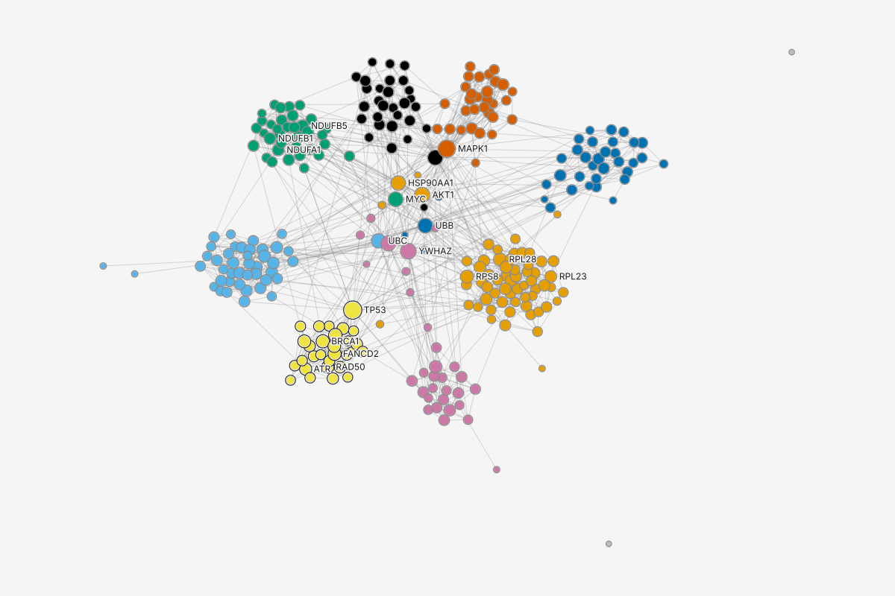
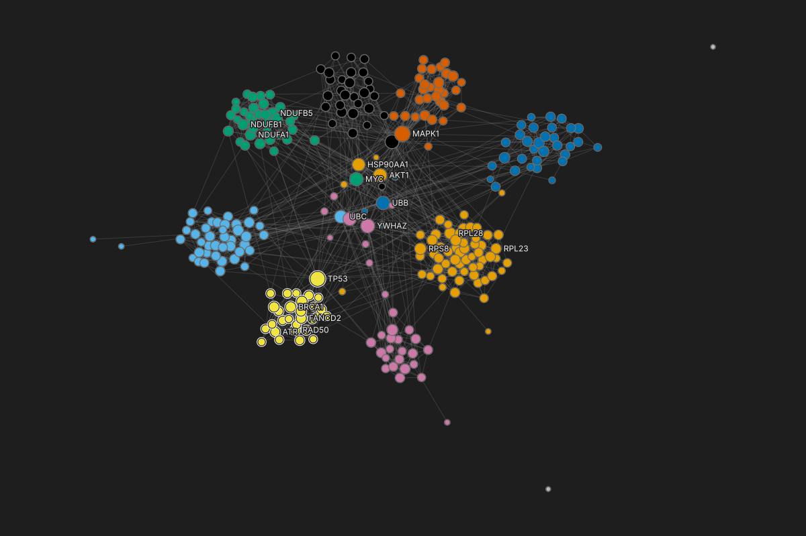

Louvain community
Community 162
Community 243
Community 336
Community 436
Community 531
Community 631
Community 730
Community 829
Other: 2 groups of 12
PageRank: size
0.000503
0.0118
Clicking a row selects the row, marks its members on the canvas and in the table, and opens its inspector: Style first, then Statistics, Members, Overlap, Notes and Used by, in one scrolling column.
NodesEdgesCommunities: Louvain
Full graph: 10 communities from Louvain. Sorted by size; the 2 communities of one protein are below.
| community | proteins | edges inside | edges out | density | most from module | hub |
|---|---|---|---|---|---|---|
| Community 1 | 62 | 232 | 93 | 0.123 | Ribosome, 56 | AKT1 |
| Community 2 | 43 | 156 | 56 | 0.173 | Proteasome, 40 | UBC |
| Community 3 | 36 | 142 | 63 | 0.225 | Complex I, 35 | MYC |
| Community 4 | 36 | 104 | 44 | 0.165 | Spliceosome, 32 | UBB |
| Community 5 | 31 | 109 | 59 | 0.234 | MAPK signaling, 31 | MAPK1 |
| Community 6 | 31 | 82 | 60 | 0.176 | TGF-beta, 21 | YWHAZ |
| Community 7 | 30 | 97 | 56 | 0.223 | Cell cycle, 29 | CDK1 |
| Community 8 | 29 | 104 | 41 | 0.256 | DNA repair, 29 | TP53 |